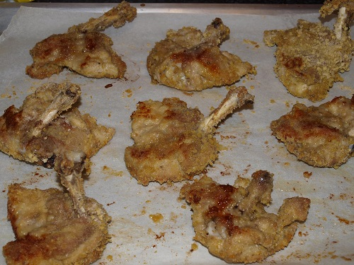

Fried Chicken Chops

Description:
This a classic fried chicken recipe
with chicken chops instead of chicken wings.
The reason i'm going with chops is because
chicken chops are more meaty
and has more fat in it.
Ingredients:
- One kilogram of chicken chop
- Salt and pepper
- One cup of all-purpose flour
- 500 ml. of vegetable oil
- 2 eggs
Steps:
- Beat eggs in a shallow dish or bowl.
- Place all-purpose flour, salt and pepper in
a sealed bag and shake it for it to mix.
- Take the chops and dredge them in the
bowl of eggs one by one.
- After dredging, put them into sealed bag
and shake it for them to absorbe the mixture.
- Heat oil in a deep-fryer
or large saucepan to 175 degrees celcius.
- Fry chicken, turning frequently,
until golden brown and juices run clear,
15 to 20 minutes.
Voila! Enjoy your crispy chicken chops!